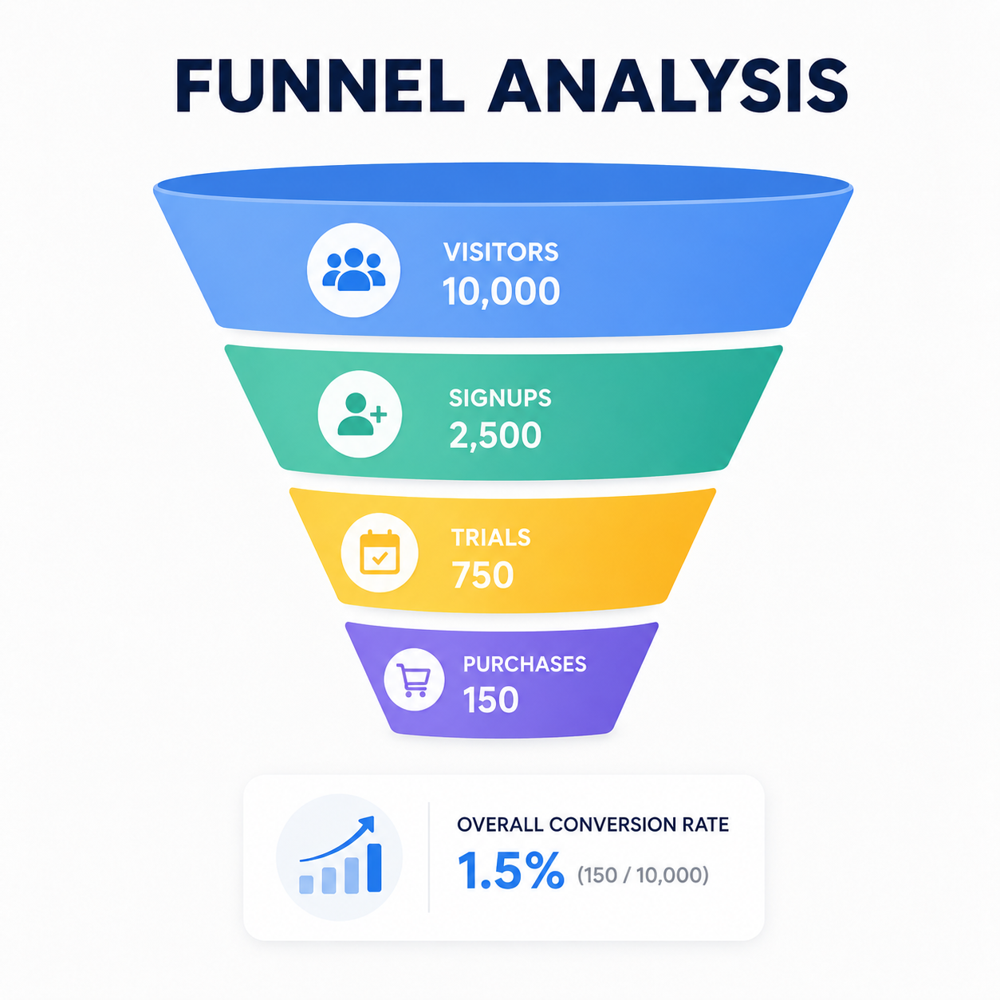
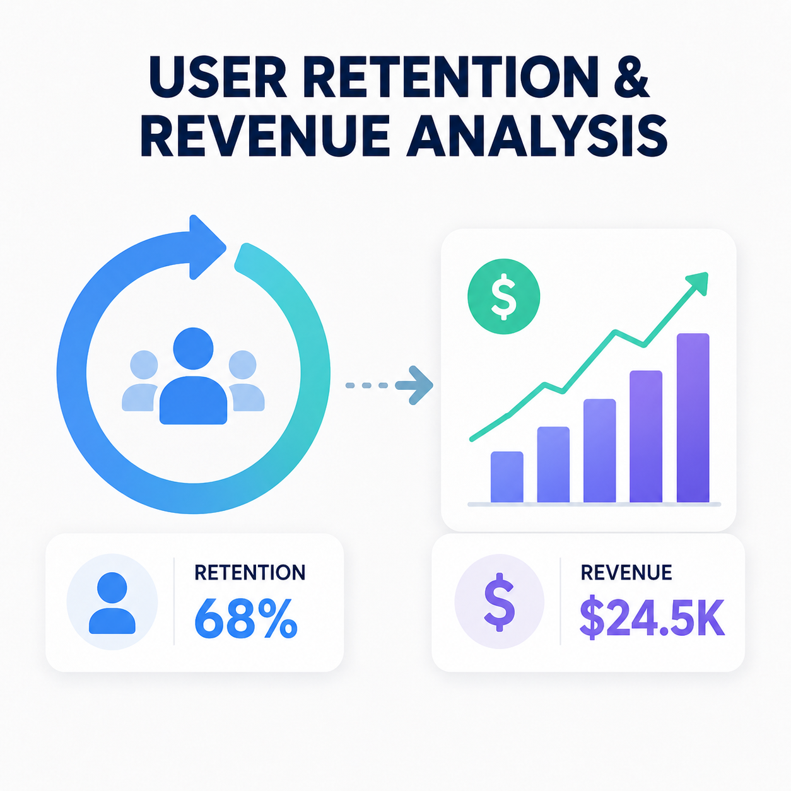
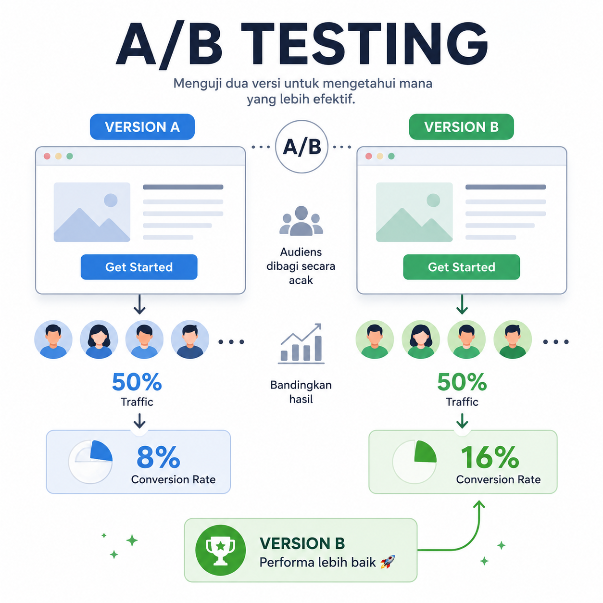

Funnel Analysis
Mengidentifikasi bottleneck pada user journey dan memberi rekomendasi perbaikan.
Curriculum Vitae Website
Saya membangun portofolio di bidang Product Analytics, SaaS Metrics, dan analisis perilaku pengguna untuk membantu pengambilan keputusan berbasis data.
PJJ Informatika S1
About Me
Saya adalah mahasiswa Informatika yang memiliki ketertarikan besar pada bidang data analytics, product analytics, dan pengembangan produk digital. Saya senang menganalisis perilaku pengguna, memahami alur funnel, serta mencari insight yang dapat membantu pengambilan keputusan berbasis data.
Saat ini saya sedang membangun portofolio sebagai calon Product Analyst dengan fokus pada industri SaaS. Saya mempelajari SQL, analisis funnel, metrik produk, visualisasi data, dan konsep eksperimen seperti A/B testing. Tujuan saya adalah mampu menjembatani data, produk, dan kebutuhan pengguna.
Education & Skills
| No | Institusi | Keterangan |
|---|---|---|
| 1 | Universitas Siber Asia | PJJ Informatika S1 |
| 2 | Pembelajaran Mandiri | Data Analytics, Product Analytics, SaaS Metrics |
Portfolio
| No | Nama Project | Fokus Analisis | Tools |
|---|---|---|---|
| 1 | SaaS Funnel Analysis | Menganalisis conversion dari tahap onboarding sampai purchase. | SQL, Excel, Visualization |
| 2 | Pricing Page Experiment | Membandingkan performa halaman pricing melalui simulasi A/B testing. | SQL, Python, Tableau |
| 3 | User Retention & Revenue Analysis | Mengukur retention, ARPU, dan kontribusi revenue berdasarkan source. | SQL, Visualization |

Mengidentifikasi bottleneck pada user journey dan memberi rekomendasi perbaikan.

Mengukur retention, ARPU, dan kontribusi revenue berdasarkan source.

Mempelajari eksperimen produk untuk mengukur dampak perubahan fitur.